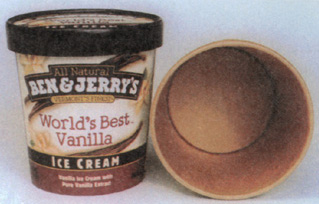

Issue #175 - August/September 1999
BITS AND PIECES
Ben & Jerry's has once again scooped the competition, developing ice cream's first-ever Eco-Pint-an environmentally friendlier carton made of unbleached paperboard and a printable clay coating. And, despite the three-plus years that went into its development, this is one recipe the company won't be keeping secret. "We're eager to share what we've learned with other manufacturers. This is one small step for the environment that can really make a difference," says Ben & Jerry's Director of Social Mission Liz Bankowski.
This "small step" took Ben & Jerry's on a veritable world tour as it sought the proper conversion method for its cartons. Traditional papermaking uses chlorine as a bleaching agent; the resulting wastewater contains hazardous carcinogens and toxic dioxins that infiltrate our water sources and eventually travel up the food chain to humans. According to the Environmental Protection Agency, dioxins are the most poisonous compounds known to man, and even the smallest amounts can be hazardous. Dioxin exposure has been linked to cancer, genetic and reproductive defects and learning disabilities.
Ben & Jerry's spokesperson Lee Holden says that reducing these harmful dioxins is the company's first priority, no matter the price. (Good news to consumers: despite higher production costs, you won't be paying more at the register.)
Look to Ben & Jerry's top-selling flavor, World's Best Vanilla, for a first glimpse of the new Eco-Pint. And by the end of this year, the company hopes to convert one-third of its major flavors to the new cartons, with the remainder making the switch by 2001.
While other companies have yet to take Ben & Jerry's up on its offer of research sharing, Holden believes most major manufacturers are united in their concern for the environment and predicts interest will soon grow.
Indeed, in what looks to be an eco-trend, high-profile coffee giant Starbucks has been test-marketing unbleached, insulated coffee cups-a bid not only to eliminate chlorine, but also to reduce wasteful double-cupping and cup sleeves-in Washington, D.C., and San Francisco.
Coffee drinkers have responded positively to the trials, and the SALENI (Starbucks and the Alliance for Environmental Information) cup is expected to debut in coffee bars nationwide next year.
Echoing Ben & Jerry's sentiments, company spokesperson Chris Gimbl says Starbucks looks forward to sharing its packaging technology with other interested companies. But no word yet on whether Starbucks will join forces with Ben & Jerry's to upgrade its own ice cream containers.
-Robin Lauzon
To learn more about dioxins and chlorine-free paper, check out these Web sites:
• Ben& Jerry's: www.benjerry.com
• Greenpeace: www.greenpeaceusa.org
• Chlorine Free Paper Consortium: www.clfree.org
• Starbucks: www.starbucks.com
|
 Ben and Jerry's |
|
|